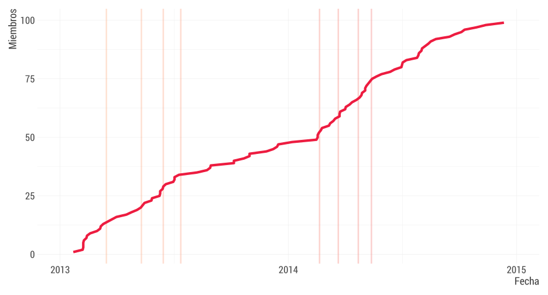
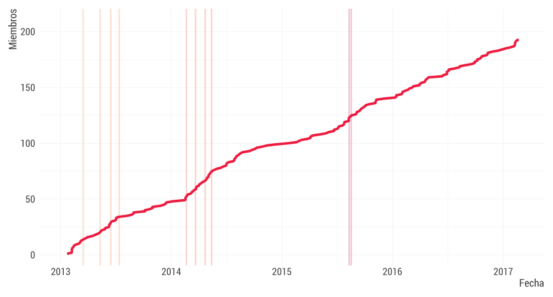

Grupo de Usuarios de R en Chile
Una historia contada a través de la experiencia y los datos
Joshua Kunst | LatinR 2018
¡Hola!
No encontré una mejor foto,
puse la mejor
Me presento
- Soy Joshua Kunst @jbkunst
- Cofundador del meetup useRchile. Uso R, respiro R,
comovivo R - Hoy quiero ser vuestro motivador
¿Por que estamos acá reunidos?
- Aprender
- Me gusta R
- Me encanta conocer gente, networking
- No tengo nada mejor que hacer
- Quería ser popular Esta es mía
- …
Entonces, ¿Por que…
- Esperar un congreso, otro año
- Tan extenso Me gustan las dosis pequeñas
- Tan sesgado a la academia
Alternativa: meetup
Hace poco tiempo,
en una galaxia no tan lejana…
Comenzó con George Vega en 1872
Y su motivación
Nah… Fue el 2013
@gvegayon
Partió con un Hola

1ra reunión - 6 Personas
mayo del 2013
Mensaje #1: comienzos toman tiempo
Poco a poco
junio del 2013
Y así
mayo del 2014
Mensaje #2:
Resumiendo el primer ciclo

George se va a estudiar al extranjero
La gente no se veía atraída
Y así vivimos el segundo ciclo

Mensaje #3:
Si algo va mal, puede ir peor
Mensaje #4:
Cuando estás abajo no queda otra que subir
Patricio Cofre y Metrics Arts al rescate
Ayudó con orden y constancia al grupo:
- Patricio llegó con energía e ideas.
- Visita(ba) clientes y partners de Metrics Arts
- Se canjean charlas de Empresas (R) a cambio de hostear el meetup
Hizo lo posible para que fuesemos uno
de los R User Groups del R Consortium
Y partimos nuevamente
Patricio (c) y gente de Microsoft Chile
Luego a Entel
septiembre del 2017
(Encuentre a la Chair)
MegaMeetup con R-ladies en PUC
diciembre del 2017
Google Chile
marzo del 2018
El renacimiento. Somos casi 1.000!
¡Sí! ¡Sí! YAS!
Resumiendo
- Se parte lento
- No todo sale como se quiere
- Siempre hay personas con el espíritu y gusto por R
- Se puede
- Ahora el turno es de ustedes
Grupo de Usuarios de R en Chile
Una historia contada a través de la experiencia y los datos
jkunst.com
@jbkunst
@jbkunst
slides: https://github.com/jbkunst/latin-r-meetup-history
charlas: http://www.userchile.cl/